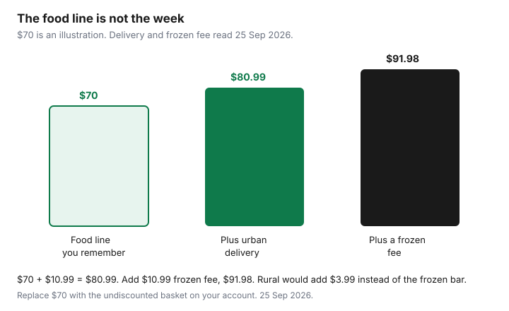

Subscriptions · Canada
Keep or Kill Your Canadian Meal-Kit Subscription After the Promo Ends
The promo week is a different product from the week after it. Shipping, a rural add-on, a frozen box, and the premium recipe you clicked because it looked like the picture were never in the “per serving” headline. Once that discount ends, the subscription is either a weeknight you will cook or a charge you are apologizing for. This page is the keep-or-kill test for a plan you already have. The first-box trial versus a grocery cart is the Food guide’s trial framework. Do not rerun a new-customer offer in your head and call it the regular price.
The worked fees below are the ones Chef’s Plate and Goodfood published, read 25 Sep 2026. HelloFresh belongs on the same worksheet: open hellofresh.ca, read the shipping line at checkout for your postal code, and ignore a third-party “per serving” roundup. A Costco membership is a different decision, on the Costco worth-it guide. It does not replace this cancel.
Disclosure: This guide has no natural affiliate offer. Saving Optimizer does not claim a partnership with any meal-kit brand. Education only. The price on your next checkout is the price.
Key takeaways
- Rebuild one full week: undiscounted meals, premium upcharges, add-ons, delivery, rural, and a frozen fee if you miss the waiver. Chef’s Plate delivery is $9.99 on its delivery-areas page. Goodfood delivery is $10.99, rural adds $3.99, and a missed frozen waiver adds $10.99.
- Over four weeks, divide what you paid by the portions someone ate. Waste doubles the real portion cost. A labelled example is below. It is not a national average.
- Price the same dinners from the flyer. If the flyer week is cheaper and you will cook it, the kit lost. The trial guide already covers the first box. This test is the box after the discount.
- Pre-skip holidays and travel. Guilt-keeping a plan you skip is more expensive than cancelling. Goodfood does not deliver Christmas, Boxing Day, or New Year’s Day. Those boxes are postponed, not free.
- Rejoin only if the brand actually offers you a new-customer promo. A second email address to replay the coupon can breach a one-account rule.
Rebuild the weekly price with real shipping and add-ons—no promo math
Open the next week that is not inside the offer window and write five lines before you look at the per-serving badge. One, the plan or basket at the price the account shows with no coupon applied. Two, any premium recipe upcharge. Goodfood defines a premium as anything above the plan’s base recipe, charged per portion. Three, market add-ons. Chef’s Plate’s offer terms say a $1 or $3 add-on is a separate perk and that the meal discount is not valid on add-ons. Four, delivery. Five, rural and frozen fees if they apply to your postal code and your basket.
Published delivery, read 25 Sep 2026: Chef’s Plate’s delivery-areas page states $9.99 for all plans, plus possible handling at checkout. A promo banner can still say free shipping. The offer terms we read say the discount is not valid on shipping, so confirm the line rather than the headline. Goodfood’s purchase terms state $10.99 delivery on all orders. Rural locations pay $3.99 plus that $10.99 when the forward sortation area contains a 0, the FAQ’s example is J0P. A frozen fee of $10.99 applies when frozen goods are under $64.99, and it is waived at or above that waiver. The FAQ says “$64.99 or more.” The terms say the fee applies under $64.99 and is waived above $64.98. Treat a small frozen add-on as a $10.99 risk until the checkout shows the waiver.
Labelled week, not a menu. Suppose the account’s undiscounted food line is $70 and you are a Goodfood urban address with no frozen goods. The week is $70 plus $10.99 delivery, $80.99, before you judge any tax line the checkout adds. The same $70 with a rural fee is $84.98. The same urban week plus a frozen fee you failed to waive is $91.98. None of those totals is a Chef’s Plate or Goodfood list price for meals. The $70 is a placeholder so the fee arithmetic is visible. Replace it with the number on your screen. Goodfood+ can zero delivery if you pay a membership. Write that membership on its own line. If you receive two boxes a month, a membership that costs more than $21.98 is not “free delivery.”

Count cooked vs wasted meals over four weeks
A cheap portion that goes in the green bin was not cheap. For four delivery weeks, write portions paid for and portions someone ate. “Ate” means cooked and served, not “still in the fridge on Sunday.” Leftovers you eat for lunch count. A recipe you skipped because you ordered pizza does not.
Labelled four weeks, so the method has numbers. A plan that sends six portions a week pays for 24 portions. Suppose 14 were eaten and 10 were wasted. Using the urban example above, four weeks cost 4 × $80.99 = $323.96 before any premium upcharge. Per portion paid: $80.99 ÷ 6 = $13.50. Per portion eaten: $323.96 ÷ 14 = $23.14. The badge might still say something near $13. The household paid $23 for each plate that was actually eaten. If your waste is lower, your eaten cost falls toward the paid cost. If you only cook one dinner out of three, stop doing the division and cancel. The threshold is personal, and the count is not. Four weeks is long enough to include a busy week and a normal week. One heroic Sunday is not a trend.
| Line | Figure | What to replace with your account |
|---|---|---|
| Week you will actually pay | $80.99 | Undiscounted basket plus the delivery and fees on the checkout |
| Portions in four weeks | 24 | Recipes × people × weeks a box arrived |
| Portions eaten | 14 | Your tally, including leftovers you ate |
| Cost per portion eaten | $23.14 | Four-week total divided by portions eaten |
Compare to a flyer-based grocery plan for the same dinners
Take the three dinners you would have cooked from the kit and price those proteins and produce from this week’s flyer, not from a memory of “groceries are expensive.” The flyer meal plan is the routine: sales first, then the meals, then the list. Unit prices at the discounter are the unit-price guide. Pantry items you already own, oil, rice, spices, are not a grocery trip. Write them at zero if they are in the cupboard. Write them in if you would have had to buy them for the kit recipe anyway.
Compare the flyer total for those dinners with the kit’s cost per eaten portion, not with the promo per-serving badge. If the flyer week is lower and you will cook it, the kit is the more expensive convenience. If the flyer week is lower only when you ignore the nights you order takeout instead, be honest about that takeout. A kit that replaces two takeout orders can still win after the promo. A kit that sits beside takeout loses. The trial guide already walks a first box against a No Frills cart. Use it for that question. Do not paste its sample cart in here and pretend it is your post-promo week. PC Express or another delivery pass is a third option only when the pass fee is in the grocery total. That math is the delivery-pass guide, not a reason to keep both.
Use skip weeks strategically around holidays instead of guilt-keeping
Skipping is the product you already paid for the right to use. Guilt-keeping is paying for a box because cancelling feels rude. They are not the same. Before a trip, a cottage week, or a holiday when you will eat with family, enter the skips out to the brand’s horizon. Chef’s Plate allows up to six weeks, due by 11:59 p.m. Pacific four days before delivery. Goodfood’s FAQ says you can manage up to eight weeks ahead, with process cutoffs at 11:59 p.m. Eastern. The steps and the last-box rule are the cancel and cutoff guide.
Goodfood’s purchase terms say the company does not deliver on Christmas, Boxing Day, or New Year’s Day, and that an order which would have fallen on those days is postponed to the next day. A postponed box still shows up, just later. If you will not be home the next day either, skip that week before the cutoff. Chef’s Plate does not publish that same holiday list on the page we read. Check the delivery calendar in the account before you assume a stat holiday is a free week.
A string of skips around one holiday is a pause. A string of skips that has already lasted longer than the boxes you cook is the decision rule on the cutoff guide: cancel. Do not renew the guilt every Sunday.
Cancel cleanly and reclaim the subscription budget line
Cancel on the path that can see the account, before the cutoff, and keep the confirmation. Then move the weekly dollars. On the subscription sheet, delete the row or mark it ended, and add the same weekly amount to the grocery envelope for the next four weeks. That is the reclaim. If the money stays in a vague “food” pile, it becomes takeout. If a charge posts after the confirmation, follow the hidden-charges steps with the email attached. Goodfood credits expire when the account is cancelled. Use a credit on a box you will cook, then cancel, if the credit is the only reason the next week is cheap. A credit you will not cook is not a reason to stay.
Tell anyone else who might reorder from the same address. Goodfood’s coupon policy is one account per address. A partner who “just tries it again” on a second profile can collide with that rule and with the card on the first account. One cancel, one confirmation, one line on the sheet.
Rejoin later only with a new-customer promo if the brand allows
The regular price already failed the four-week test. Coming back at that price repeats the failure. Rejoin only when the brand offers a new-customer promotion to you, on the account you are allowed to use, and you have a four-week stretch when you will cook. Chef’s Plate’s offer text is for new customers. Goodfood’s FAQ says an acquisition coupon is for new members, one offer per member, one account per address, one card. The purchase terms say a free-meal offer may sometimes apply to re-subscribing. “May” is not a code you are owed. If the checkout does not show the offer, the full price is the price.
Do not open a second email address, a second card, or a relative’s name to replay a new-customer coupon. That is the behaviour the one-account rule is written to stop, and it can strand a charge you do not control. If you rejoin on a real offer, calendar the expiry the same day. Chef’s Plate’s published offer window is 49 days from purchase. Goodfood says a free-meal offer can roll into full billing without a separate warning. The day the discount ends, rerun this page. A second promo is not a personality. It is another four-week test.
Sources & date stamps
- Goodfood purchase terms and FAQ, read 25 Sep 2026: delivery $10.99; rural $3.99 plus delivery when the FSA contains a 0; frozen fee $10.99 under the $64.99 waiver; no Christmas, Boxing Day, or New Year’s delivery, postponed to the next day; credits end when the account is cancelled; one acquisition coupon, one account per address, one card.
- Chef’s Plate delivery-areas page and offer terms, read 25 Sep 2026: $9.99 flat delivery, possible handling; new-customer offer expires 49 days after purchase at 11:59 p.m. Eastern; discount not valid on shipping, premiums, upgrades, add-ons, or taxes.
- The $70 food line, the $80.99 week, and the $23.14 eaten-portion figure are labelled arithmetic on those delivery fees. They are not menu prices and not your invoice. HelloFresh shipping was not copied from a third-party roundup. Read it at checkout.
Frequently asked questions
The per-serving price still looks low. Why rebuild the week?
The badge often excludes delivery, rural fees, frozen-box fees, premium upcharges, and add-ons. Goodfood's terms state $10.99 delivery. A $70 food line in the labelled example becomes $80.99 before a frozen fee. Use your checkout, not the badge.
How do I count waste?
Over four weeks, portions someone ate divided into the dollars you paid. Leftovers you eat count. A recipe that becomes takeout does not. In the labelled example, 14 portions eaten out of 24 raised the cost from about $13.50 paid to $23.14 eaten.
Should I compare with a flyer or with the trial guide?
Both, for different moments. The Food guide prices a first box against groceries. This test prices the dinners you would cook after the discount, using this week's flyer and pantry you already own.
Do holiday weeks cancel themselves?
No. Goodfood's terms say Christmas, Boxing Day, and New Year's Day are not delivery days, and the box is postponed to the next day. Skip that week before the cutoff if you will not be home. Chef's Plate: enter skips up to six weeks ahead.
Can I rejoin later for the new-customer price?
Only if the brand offers that promo to you. Goodfood's FAQ allows one acquisition coupon per member, one account per address, one card. Chef's Plate's published offer is for new customers. A second email address to replay it can breach the one-account rule.